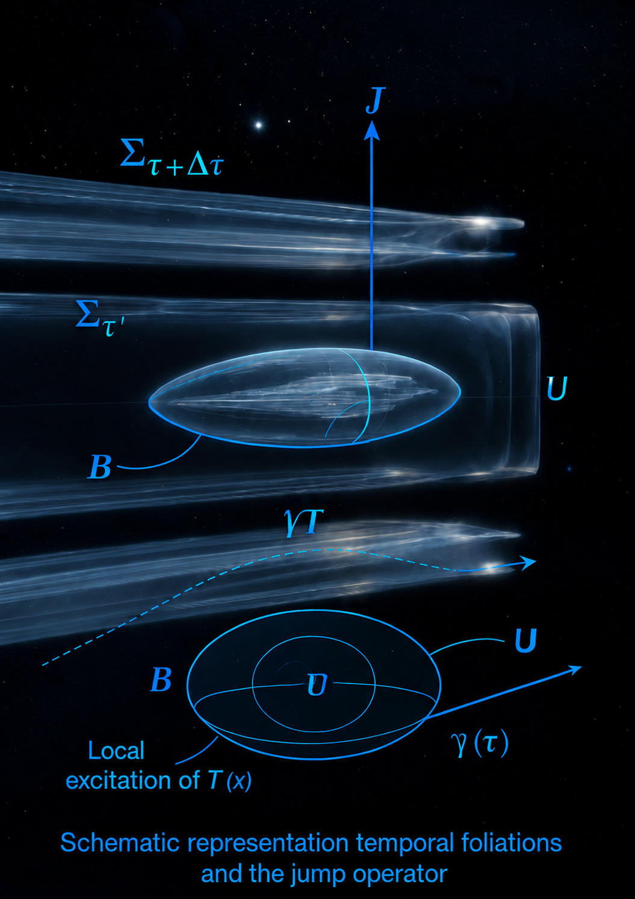

INDEPENDENT RESEARCH
TimeT research series
Three public preprints by Vitaly Dziubov explore a speculative time-field framework. This work is separate from BTC2G market research.

Publications on Zenodo
- Document 1: Time as a Physical Condition ↗
- Document 2: Discrete Temporal Transitions ↗
- Document 3: Experimental Signatures ↗
Illustration adapted from Document 2. Open the record for the complete paper and metadata.
Support independent experiments
Voluntary contributions help fund experiments and continued research into the proposed time-field framework.
- Asset and network
- Tether (USDT) · TRON network (TRC-20)
- Receiving address
TKWzm9cXYEM5hqsDboj9Uh2NDLZUgBzaN4
Verify before sending: send only USDT on the TRON network (TRC-20) to this address. Crypto transfers are irreversible.
This is a voluntary contribution, not an investment or purchase. It provides no ownership, financial return, tax benefit, delivery date, or guarantee of successful results. BTC2G does not process or custody the transfer.